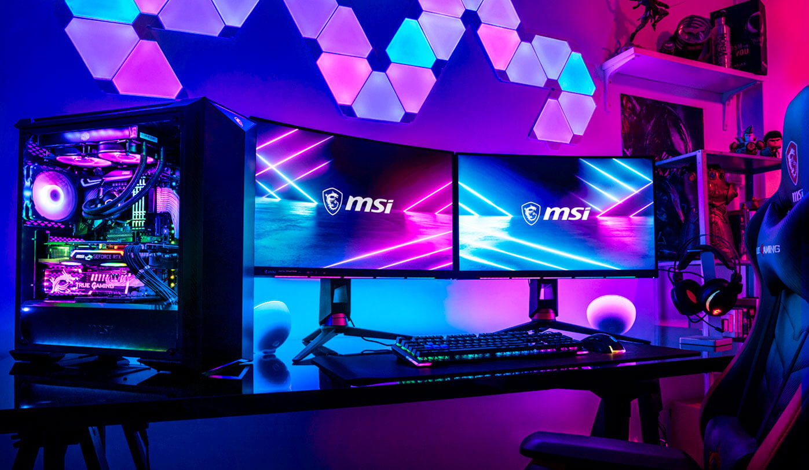

Começamos a aprender sobre o curso técnico no 1° ano do encino médio em 2022 porém o curs não era presencial e não estavamos aprendendo muita coisa ,mais no inicio do 2° ano passamos a ter aulas presenciais
nesse ano estamos aprendendo a mecher no GitHub,VS code,Android Studio,etc...
em o objetivo de estreitar laços entre escola e mercado de trabalho. De tirar a educação básica do campo teórico, alinhado exclusivamente às provas de vestibular, e integrá-lo às reais necessidades da sociedade de agora. Busca desenvolver habilidades técnicas e psicossociais valorizadas no mercado de trabalho, formando profissionais capazes de executar, questionar, inovar e progredir.
